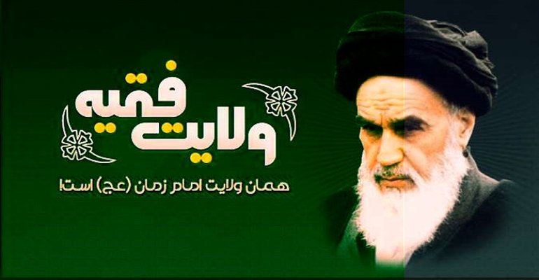

اثبات عقلی ولایت فقیه
9 دلیل عقلی در اثبات ولایت فقیه
متن برنامهی درسهایی از قرآن کریم حجتالاسلام و المسلمین استاد قرائتی (تاریخ پخش: 90/03/12)
1- استمرار هدایت الهی در طول تاریخ
دلایل عقلی یعنی کار به قرآن و حدیث هم نداریم، عقل خودمان... بعد آنوقت دلایل قرآنی و حدیثیاش را هم میگوییم. یکی اینکه ما نمیتوانیم بگوییم: خدایی که «لا یَعْزُبُ عَنْهُ مِثْقالُ ذَرَّةٍ» (سبأ/3) یعنی ذرهای چیزی از چشم خدا پنهان نیست، یک مرتبه بعد از پیغمبر خدا مردم را رها کند. عقل قبول نمیکند، که خداوندی که برای هر چیز جزئی حدیث داریم، برای خوردن، همین خوردن، برای غذا خوردن هم حدود سه هزار تا حدیث داریم. چه بخور؟ چقدر بخور؟ چطور بخور؟ کی؟ زمان؟ مکان؟ برای خوابیدن دستور دارد. پیغمبری که یک چنین دین جامعی آورده که برای مسائل جزئی تا مسائل اقتصادی، سیاسی، نظامی، حقوقی، آخر یک مرتبه مردم را رها کند. بگوید: هیچی به هیچی! عقل اجازه نمیدهد.
یک رییس کارخانه را عقل اجازه نمیدهد که بگوییم: کارخانه را درست کرد و کارگرهایش را رها کرد و رفت. یک چوپان را بگوییم گوسفندهایش را رها کرد. یک مادر را بگوییم: بچهاش را رها کرد. اصلاً اگر بگوییم: خدا جامعه را به کسی نسپرده است، این با حکمت خدا سازگار نیست.
2- حکومت بر مردم، حق خداست
دوم اینکه ما حکومت را حق خدا میدانیم. چون آن کسی که خلق کرده است، آن هم حق دارد امر و نهی کند. من چه کاره هستم که به شما بگویم، بکن یا نکن. میگوید: تو چه کاره هستی؟ تو چه کاره هستی؟ آن شبی که مادر مرا زایید، آزاد زایید. بله قربان گو نزایید. انسان آزاد است. به چه دلیل بله قربان بگوید؟ انسان بله قربانگوی احدی نیست، جز خدا! «إِنِ الْحُکْمُ إِلاَّ لِلَّهِ» (یوسف/67) و حکومت اسلامی ابزار این حاکمیت خداست. اگر خدا باید حاکم باشد، ابزار حکومت خدا حکومت اسلامی است.
3- زندگی بشر اجتماعی است، یعنی ما مثل یک بوته نیستیم که خودمان سبز شویم، خودمان خشک شویم، کار به بوتهی بغلی نداشته باشیم. زندگی ما اجتماعی است. در زندگی اجتماعی تزاحم است. چون در یک منافعی هم او میکشد، هم این میکشد. چون در زندگی با هم هستیم. در زندگی گروهی بِکش بِکش است. بکش بکش است. تزاحم پیش میآید، برای تزاحم قانون میخواهیم. برای قانون، قانونگذار میخواهیم. اگر ولایت فقیه نباشد، یعنی چه؟ یعنی خداوند بشر را خلق کرد، زندگیاش هم طوری است که نیاز به جامعه دارد. یعنی من نیاز به شما دارم. کفاش به نانوا، نانوا به قصاب، قصاب به نجار، زندگی بشر اجتماعی است، در زندگی اجتماعی درگیری و تزاحم است. درگیری قانون میخواهد، قانون، قانونگذار میخواهد. کسی بگوید: ولایت فقیه هیچی، یعنی هیچی به هیچی! بشر هم نمیتواند قانونگذاری کند. چرا؟ برای اینکه کسی حق دارد قانون بگذارد که اطلاع کامل داشته باشد. یک دکتر برای جسم خواسته باشد پزشک خوبی باشد، باید از قند و اوره و فشار و تب و... یعنی باید همهی خصوصیات جسمی مرا بداند تا نسخهاش درست باشد. وگرنه دارو میدهد کلیهاش خوب شود، کبد خراب میشود، کبد خوب میشود، چشم. چشم، گوش، اگر دکتری خواسته باشد نسخهاش کامل باشد باید تمام شرایط درونی بدن را همینطور که نسخهی پزشک وقتی خوب است که اطلاع کامل داشته باشد، قانون هم وقتی قانون حق است، که اطلاع کامل داشته باشد. ما کسی را جز خدایی که اطلاع کامل داشته باشد، نداریم.
در زمان خودمان، الآن بعضی کشورهای غربی حالا 119 مرتبه قانون اساسیاش عوض شده است. در کشور خودمان صبح میگویند: خیابان یک طرفه، عصر میگویند: دو طرفه! هر روزی هر کاری میکنی یک... الآن شنیدم که ایرانیهای خارج از ایران گفتند: این چیزی که دولت میدهد، یارانهها را به ما هم بدهد. سرباز نمیدهیم، صدام به ایران حمله کرد ما رفتیم خارج خوش باشیم، خطری برای ایران آمد، به درک! ما در رفاه باشیم، اما اگر یک پول نفت فروختید به ما هم برای خارج... حالا مثلاً یعنی هرکاری بکنی، یک جای آن...
3- علما و فقها، نزدیکترین افراد به امامان معصوم (ع)
کسی میتواند قانونگذار باشد که اطلاع کامل و جامع داشته باشد و جز خدا کسی اطلاع ندارد و بنابراین قانون حق خداست، خدا هم این قانون را از طریق اولیائش به ما داده است. ولایت فقیه همین است. ولایت فقیه یعنی حکومت اولیاء خدا! اولش شخص پیغمبر است. بعدش ائمهی اطهار هستند، ائمهی اطهار هم به ما گفتند: حالا که دست شما به امام معصوم نمیرسد، لااقل نزدیکترین کس به امام معصوم چه کسی است؟ آن کسی که علم امام را داشته باشد. آن کسی که علم امام را داشته باشد، نزدیکترینش مراجع تقلید هستند. اگر عصمت ندارند نزدیکترین مقام به عصمت عدالت است. حالا که معصوم نیستی عادل باش. حالا که علم تو علم لدنی نیست، لااقل بیشترین اطلاع از علم آنها داشته باش. خوب این به طور طبیعی است. یک جنازه را میخواهند نماز بخوانند، میگویند پسر بزرگ اجازه بدهد. چون نزدیکترین کس به این مرحوم اولاد اکبرش است. اگر یک کسی از دنیا رفت، نماز قضایی دارد، اولیترین کس که این نماز قضای پدر را بخواند، اولاد بزرگتر است. این چیز عقلی و طبیعی است. در دنیا هم همینطور است.
شما اگر در خانهی کسی رفتی گفتند: نیست، میگویی: آقازادهشان هستند؟ در آقازادهها هم میخواهی پسر بزرگش باشد.این استدلال نمیخواهد، تمام عقلا این کار را میکنند. پس ببینید یکبار دیگر نصفش را من میگویم و نصفش را شما بگویید. چون ما آزاد آفریده شدیم، بله قربان گوی هیچکس نیستیم. و چون زندگی ما اجتماعی است درگیری میشود، قانون میخواهیم و قانون، قانونگذار میخواهد. قانونگذار باید علم جامع و کامل و به همهی شرایط ما داشته باشد. و وقتی هم دستمان به معصوم نمیرسد، نزدیکترین فرد به امام معصوم نزدیکترین فرد به علم امام، اعلم است. که باید اعلم باشد. نزدیکترین فرد به عصمت، عادل است. یعنی آن کسی که عادل است، یک قدم به عصمت نزدیکتر است. اینها دلایل روشنی است.
4- بهرهگیری از علم و عدالت، در حدّ امکان
خوب یک قانون عقلی است. میگویند: «ما لا یدرک کله لا یترک کله» آخوندها این را میگویند. آقا شما اگر رفتی دوش آب داغ بگیری، اگر آب داغ نبود از آب نیمگرم استفاده کن. نه اینکه یا آب داغ، یا آب یخ، اگر نیم کیلو غذا میخواهی که سیر شوی، و نیم کیلویش نبود، با آن مقداری که هست یک لقمه میخوریم. یعنی چیزی کلی... یعنی هرچه، آقا اگر طلبکار هستی، از کسی هم یک میلیون میخواهی، میگوید: یک میلیون ندارم. میگویی: آقا نصفش را بده. ثلثش را بده. قسطی بده. یعنی نمیگویی حالا که نداری پس هیچی! حالا که نداری پس هیچی نیست! یعنی چیزی که کلش را به دست نمیآوری لااقل جزئیاش را به دست بیاوری. این قانون عقلی است. «ما لا یدرک کله...» اگر مصالح واقعی توسط امام معصوم بدست نمیآید، لااقل توسط اعلم عادل بخشیاش تأمین شود. ما که دستمان به معصوم نمیرسد. ما که دستمان به معصوم نمیرسد نباید بگوییم: پس هیچی، اصلاً ولایت فقیه را نمیخواهیم. هرکسی هرکاری دلش میخواهد بکند. عقل میگوید اگر به بیست نرسیدی، به نوزده، به نوزده نرسیدی به هجده، اینطور نباشد یا بیست یا صفر، ما آزاد آفریده شدیم. بله قربانگوی احدی نیستیم. کسی حق امر و نهی دارد که من را ساخته است. آن کسی که مرا ساخته باید قانون را وضع کند. او از طریق انبیا گفته و وقتی هم انبیا نیست، نزدیکترین کس به انبیاء فقیه عادل است.
5- کفر به طاغوت و نفی سلطه ظالمان
مسألهی دیگر، در قرآن به ما گفتند: «فَمَنْ یَکْفُرْ...» بگویید... «بِالطَّاغُوتِ» (بقره/256) «ْ أُمِرُوا أَنْ یَکْفُرُوا» (نساء/60) به ما گفتند مراجعه به طاغوت نکن. خوب اگر به طاغوت مراجعه نکنیم کجا برویم؟ اگر گفتند این جاده ممنوع است اگر یک کوچه تابلو ورود ممنوع زدند باید کوچهی بغلیاش باز باشد. اگر گفتند به طاغوت مراجعه نکن، پس باید یک کسی را معین کنند که لااقل ما به او مراجعه کنیم. به چه کسی مراجعه کنیم؟ به طاغوت مراجعه نکنیم. پس درگیریها و اختلافات را به چه کسی مراجعه کنیم؟ عقل میگوید: کسی که میگوید: به طاغوت مراجعه نکن، پس باید کسی باشد که به او مراجعه کنیم. در قرآن خدا گله میکند، میگوید: مردم یک مردمی هستند که «وَ إِذا جاءَهُمْ أَمْرٌ مِنَ الْأَمْنِ أَوِ الْخَوْفِ أَذاعُوا» (نساء/83) یک خبر امنیتی، یا وحشتی آمد فوری پخش میکنند. حق ندارید هر خبری را پخش کنید. این را به اهل استنباط ارجاع بدهید، «لَعَلِمَهُ الَّذینَ یَسْتَنْبِطُونَه» اهل استنباط تحلیل کنند به شما خبر را بگویند. خوب خبر یک لحظه است. ناوگان کجا آمد، کجا حمله شد؟ چه شد؟ قرآن میگوید: خبرهای لحظهای را به اهل استنباط بدهید، آنوقت ما قوانین دائمیمان را لازم نیست به اهل استنباط بدهیم. اگر برای ساختن یک اتاق مجوز از شهرداری میخواهیم، اگر خواستیم یک شهری بسازیم، مجوز از شهرداری نمیخواهیم؟ اگر برای یک چیز جزئی خواستیم... قرآن میگوید: حتی مسائل لحظهای را به اهل استنباط بدهید. خودتان پخش کنید ممکن است آفاتی داشته باشد. اگر مسائل جزئی را به اهل استنباط بدهیم، آنوقت تمام قوانینی که صبح تا شام با آن کار میکنیم، نباید اهل استنباط بوده. ولایت فقیه یعنی چه؟ یعنی کسی که دین را استنباط میکند. استنباط یعنی چه؟ استنباط یعنی آب کشیدن از چاه! یعنی بتواند نگاه به آیه کند، بتواند به آیه نگاه کند از درون آیه این قرآن چاه است، بتواند از چاه آب بکشد. اینکه میگویند فقیه، یعنی کسی که بتواند حکم خدا را استنباط کند. چطور الآن میگویند: فلانی تحلیل سیاسی میدهد؟ یعنی اخبار را کنار هم میگذارد، از درون اخبار یک استنباطی میکند. مسائل سیاسی استنباط میخواهد، لحظهای است.
6- استنباط احکام، تخصص فقهای دین
مسألهی دیگر قرآن میگوید: «لَعَلِمَهُ الَّذینَ یَسْتَنْبِطُونَه» بعد میگوید که «وَ لَوْ لا فَضْلُ اللَّهِ عَلَیْکُمْ وَ رَحْمَتُهُ لاَتَّبَعْتُمُ الشَّیْطان» (نسا/83) میگوید: به اهل استنباط مراجعه کنید، اگر به اهل استنباط مراجعه نکنید، «لاَتَّبَعْتُمُ الشَّیْطان» یعنی اگر فقیه عادل برای شما تحلیل و استنباط نداشته باشد، دیگران شما را میبرند. مثل بچه! سینهی مادر را در دهان بچه نگذاری سر شیشهای می مکد. و لذا به ما گفتند هرکس بچه دارد در خانه بچه شود. چون اگر شما بچه شدی، بچه ات میخواهد بازی کند، اگر شما بچه شدی، بچهی شما تأمین میشود، اگر بچهات در کوچه میرود بازی میکند آنوقت معلوم نیست دیگر مسألهی اخلاقیاش، بهداشتی اش، دیگر دست شما نیست. «من کان له صبیّ فلیتصبّی» یعنی چه؟ یعنی نیاز بچه را تأمین کنید، وگرنه بچه آفت پذیر است، آسیبپذیر است. قرآن میگوید: خبرها را به اهل استنباط بدهید، که از نطر علمی و عدالت قدرت تشخیص داشته باشد، اگر نکنید پشت سرش میگوید، «وَ لَوْ لا فَضْلُ اللَّهِ عَلَیْکُم» این فضل خداست، که دست شما را در دست فقیه گذاشته است. اگر این کار را نکنید، «لاَتَّبَعْتُمُ الشَّیْطان» هرکسی شما را به یک سویی میبرد. خوب این واقعاً انسان نیاز دارد. حالا یک قصهای برایتان بگویم.
اصلاً به چه دلیل ما پیغمبر میخواهیم؟ عقلمان ناقص است. به چه دلیل ناقص است؟ پشیمان میشویم. هرکس در عمرش پشیمان میشود، دلیل بر این است که عقلش کوتاه است. اگر عقل کامل بود هیچ کس پشیمان نمیشد. پس بشر عقلش ناقص است. دلیل؟ پشیمانیها... هرکسی صد بار، دویست بار کمتر یا بیشتر پشیمان میشود
بعد از انقلاب در تهران یک سری موقوفات بود. ساختمانهای ناصرالدینشاه و مظفرالدین شاه و موقوفات و بازار و خیابان وتیمچه و... خوب شاه که سقوط کرد، و اوقاف شاه سقوط کرد، گفتند: که این اموال را به چه کسی بدهیم؟ چهار گروه بودند. یکی سازمان تبلیغات یک نظر بود که اینها را به سازمان تبلیغات بدهیم.2- جامعه روحانیت مبارز. 3- اداره اوقاف، 4- میراث فرهنگی، چند جلسه نشستند هرکسی میگفت اختیار این اموال برای من باشد، من از درآمدش این کار را میکنم. بالاخره بعد از چند جلسه گفتند: برویم ببینیم امام چه میگوید؟ رفتند پهلوی امام و گفتند: آقا اموال سنگینی است، درآمد سنگینی هم دارد، متصدی و تولیت با چه کسی باشد؟ پیشنهاد سازمان تبلیغات، اوقاف، میراث فرهنگی، روحانیت مبارز، امام یک خرده فکر کرد، گفت: هیچ کدام! گفتند: اِ... پس چه کسی؟ گفت: اگر این مدرسه خبر شود هیچکدام از شما اصلاً متوجه نمیشوید. چون پشت مبز ادارهتان و خانه تان هم جای دیگر است. برو ببین نزدیکترین آخوند به آن مدرسه چه کسی است، تولیت را به او بده، کلید را هم به او بده که صبح به صبح به مدرسه سر بزند. شما خواسته باشید سر بزنید تاریخ میزنید که 02/08/90 فلان و تا سر بزنیم مدرسه خراب شده است. نزدیکترین... گاهی وقتها مثلاً مسائل جنگ و جبهه گاهی وقتی تاب میخورد میآمدند نزد امام، امام یک چیزی میگفت همه آرام میشدند. همه آرام میشدند. اگر دستتان در دست اهل استنباط نباشد، «لاَتَّبَعْتُمُ الشَّیْطان»
اصلاً به چه دلیل ما پیغمبر میخواهیم؟ عقلمان ناقص است. به چه دلیل ناقص است؟ پشیمان میشویم. هرکس در عمرش پشیمان میشود، دلیل بر این است که عقلش کوتاه است. اگر عقل کامل بود هیچ کس پشیمان نمیشد. پس بشر عقلش ناقص است. دلیل؟ پشیمانیها... هرکسی صد بار، دویست بار کمتر یا بیشتر پشیمان میشود.
انتخاب انسان هم قابل اعتماد نیست. چون اگر انتخاب انسان درست بود، دیگر هیچ همسری از همسرش طلاق نمیگرفت. پس آمار طلاق مثلاً اگر سه میلیون طلاق در دنیا داریم، حالا که بیشتر داریم. اگر میلیونها طلاق هست، پس پیداست انتخاب انسان درست نیست. میلیاردها پشیمان شدیم، شش میلیارد جمعیت است هرکدام صد بار در عمرشان پشیمان شده باشند، میشود ششصد میلیارد پشیمانی. پشیمانی و طلاق دلیل بر این است که عقل ما کامل نیست. وگرنه نه پشیمان میشدیم و نه همسر طلاق میدادیم. خوب پس حالا که اینطور است نیاز به وحی داریم. خوب پیغمبر که رفت چه؟ پیغمبر که رفت عقل ما کامل میشود؟ به همان دلیلی که عقل ناقص پیغمبر میخواهد، به همان دلیل عقل ناقص امام میخواهد، بعد از امام هم به همان دلیل عقل ناقص فقیه میخواهد. آقای قرائتی! فقیه پشیمان نمیشود؟ بله فقیه ممکن است پشیمان شود، ممکن است فقیه اشتباه هم بکند، اما ضریب اشتباهش از دیگران کمتر است.=
توجه کنید انسان از چهار راه آسیب میپذیرد:
7- راههای آسیبپذیری افراد عادی
1- از راه هوسهای درونی، من این بحث را در ده، بیست تا دانشگاه گفتم. منتهی نمیدانم در تلویزیون هم گفتم یا نگفتم؟ ولی وقتی گفتم تمام دانشجوها و اساتید دانشگاه تحسین کردند. چون همینطور فرمول ریاضی است. از چهارراه انسان گزیده میشود. یا از هوسهای درونی است. هوسش است دست به یک کاری میزند بعد میبیند بد شد. دنبال هوسش رفت. یا از راه فشار بیرونی است. تحریکات بیرونی، پولش میدهند، رشوهاش میدهند، با پول، تهدید، فحشش میدهند، طومار مینویسند، راهپیمایی میکنند، یک موجی راه میاندازند و او را هل میدهند. یا از بیرون او را تحریک میکنند. یا از هوس است. یا بیخبری است.
جهل، از راه جهل است. جاده را نمیداند میرود در دره میافتد. این غذا را نمیداند مسموم است میخورد مریض میشود. فقیه از این سه راه بیمه است. فقیه از راه جهل بیمه است. این راه بسته است چرا؟ برای اینکه فقیه باید اعلم باشد. باسواد ترین! یا واقعاً اعلم اعلم باشد، یا بین چند نفر که یکی از این چند نفر اعلم هستند. پس جهل نیست، از راه جهل گول نمیخورد. از راه هوسهای درونی هم بیمه است. چرا؟ چون در روایات مرجعیت مینویسند، اینکه می نویسم حدیث است. مینویسند «مخالفاً لهواء» شرط مرجع تقلید و فقیه این است که هوا پرست نباشد. از راه تحریکات بیرونی هم مصون است. چرا؟ برای اینکه شرط فقیه این است که عادل باشد. عادل یعنی چه؟ من عادل را به چربی مثال میزنم. دست شما که چرب است آب میریزی این چربی پس میزند. عادل یعنی انسان یک حالتی دارد به گناه که میرسد گناه را پس میزند. یعنی نمیشود در روحش اثر گذاشت. بله فقیه از یک راه ممکن است اشتباه کند. و آن این است که تجدید نظر، امروز یک مطالعه میکند، نظرش برمیگردد. تجدید نظر در عمرش چند بار؟ مثلاً یک مرجع تقلید که رسالهاش پنج هزار تا مسأله دارد با کم و زیادش، ممکن است پنج تا از این مسائل را تجدید نظر کند. خوب وقتی دست ما به امام معصوم نمیرسد، دنبال چه کسی برویم؟ لااقل فقیه از سه راه بیمه است. ممکن است اطلاعاتش، تجربهاش به مرور اضافه شود، ولذا همهی پروفسورهای دنیا علمیترین کتابها را هم که نوشتند، مثلاً مینویسند چاپ هفدهم با تجدید نظر! یعنی تجدید نظر قابل پذیرش است در دنیای علم.
آن خدایی که به خاطر حکمت دست بشر را در دست پیغمبر گذاشته بعد هم در دست اهل بیت گذاشته، بعد از اهل بیت در زمان غیبت اهل بیت، باید دست ما را در دست یک کسی بگذارد. رها کردن بشر حکیمانه نیست. عقل قبول نمیکند. یک مدیر،کارخانه را رها نمیکند. یک ماشین رانندهاش را... آخر مگر میشود بشر رها شود؟ بعد از غیبت هیچی به هیچی!
همین مهندسی که اینجا را ساخته اگر خراب کند، دوباره خواسته باشد بسازد، ممکن است یک جای این ساختمان را تجدید نظر کند. نقشش را عوض کند. و لذا نگاه میکنیم مهندسهای درجه یک ساختمانهایی که در یک خیابان میسازند، ساختمان شانزدهم با پانزدهم فرق میکند. پانزدهم با سیزدهم فرق میکند. این تجدید نظر در دنیا قابل قبول است. ببینید دلیل ولایت فقیه چیست؟ انسان زندگیاش اجتماعی است. در زندگی اجتماعی درگیری میشود، در درگیری قانون میخواهیم، قانونگذار باید کسی باشد که تحت تأثیر هوسها نباشد، اطلاعاتش هم جامع و کامل باشد. و او فقط خداست. قانون فقط خداست. «إِنِ الْحُکْمُ إِلاَّ لِلَّهِ» خداوند قانونش را از طریق انبیاء گفته، وقتی پیغمبر و امام نیست اگر مردم رها شود این خلاف حکمت خداست. یعنی خداوند نعوذ بالله، نعوذ بالله، نعوذ بالله، نعوذ بالله، نعوذ بالله، نعوذ بالله عادل نیست. که برای یک گروهی پیغمبر بفرستد، برای یک گروهی امام بفرستد ما هم همینطور به امید خدا رها کند! بگوید: بروید دنبال کارتان!
آن خدایی که به خاطر حکمت دست بشر را در دست پیغمبر گذاشته بعد هم در دست اهل بیت گذاشته، بعد از اهل بیت در زمان غیبت اهل بیت، باید دست ما را در دست یک کسی بگذارد. رها کردن بشر حکیمانه نیست. عقل قبول نمیکند. یک چوپان بزغالههایش را رها نمیکند، یک مدیر کارخانه، کارخانه را رها نمیکند. یک ماشین رانندهاش را... آخر مگر میشود بشر رها شود؟ بعد از غیبت هیچی به هیچی! دستمان را در دست خدا نگذاریم «لاَتَّبَعْتُمُ الشَّیْطان». دنبال کسانی میرویم که پر از هوس هستند. پر از جهل هستند، پر از گناه هستند. دستمان را در دست چه کسی بگذاریم؟
8- اوامر و نواهی قرآن درباره پذیرش حاکمان
اصلاً اگر حکومت نباشد قرآن یک مشت آیه دارد، این آیهها ارشادی است. یعنی اگر قرآن هم نبود، عقلمان میفهمید. مثلاً چهار تا کلمه مینویسم منتها خیلی آیههایش شاید به بیست تا برسد، میگوید: «لا تُطِع» (احزاب/1) یعنی از اینها اطاعت نکن. در یک سری از آیات میگوید: «لا تُطیعُوا» (شعرا/151) اطاعت نکنید، یکسری از آیات میگوید: «لا تَتَّبِع» (مائده/48) تبعیت نکن، یک سری از آیات میگوید: «لا تَتَّبِعُوا» (بقره/168) تبعیت نکن، وقتی میگوید: نه، نه، نه، نه، پس چه؟ وقتی میگوید: به طاغوت مراجعه نکن، پس به چه کسی مراجعه کنم؟ وقتی میگوید «لا تُطِعْ مِنْهُمْ آثِماً» (انسان/24) گناهکار را پیروی نکن. «أَوْ کَفُوراً» از کافر پیروی نکن. «وَ لا تُطیعُوا أَمْرَ الْمُسْرِفینَ» (شعرا/151) گوش به حرف این ولخرج و اسرافکار نده. «لا تَتَّبِعْ سَبیلَ الْمُفْسِدینَ» (اعراف/142) گوش به حرف آدمهای مفسد نده. «لا تَتَّبِعْ أَهْواءَ الَّذینَ لا یَعْلَمُونَ» (جاثیه/18) گوش به حرف آدمهای جاهل نده. «وَ کانَ أَمْرُهُ فُرُطاً» (کهف/28) آدم های افراطی را به حرفش گوش نده. آخر وقتی میگویی نه نه نه، پس چه؟ پس چه؟ ما وقتی به جوانها میگوییم: این کار خلاف است، این کار خلاف است، این کار خلاف است، پس باید راه ازدواج را باز کرد. نمیشود بگوییم: آقا ازدواج نکن، همهی راهها را هم ببندیم. خوب پس چه کند؟ پس چه کند؟
در قرآن صدها آیه داریم راجع به امور سیاسی، قضایی، اجتماعی، حقوقی. کتابی را یکی از دوستان از تفسیر نور جمعآوری کرده، دو هزار و هفتصد نکتهی حقوقی. من خودم باور نمیکردم قرآن اینقدر مسائل حقوقی دارد؟ دادیم به دکترهای حقوق تحسین کردند حالاچاپ شده است. تازه من حقوقدان هم نبودم. به عنوان یک طلبه تفسیر نوشتم، منتهی او چون دکترای حقوق بوده، برداشته آیات حقوقی را درآورده است. حقوق بینالملل در قرآن، حقوق کیفری، حقوق جزایی، حقوق خانواده، حقوق جنگ، حقوق عمومی، حقوق خصوصی، اوه... وقتی قرآن این همه آیهی حقوقی، سیاسی، قضایی، چه و چه دارد، آنوقت اینها بدون حکومت، بدون ولایت فقیه قابل اجرا است؟ ولایت فقیه میخواهند وگرنه قابل اجرا نیست.
اصلاً تمام عقلای دنیا از مسلمانی هم بیرون برویم. تمام کرهی زمین به کارشناس مراجعه میکنند. لباسش خیاط است، ساختمانش مهندس است. مریض میشود پزشک، تمام عقلا به کارشناس مراجعه میکنند، زنده باد اسلام! زنده باد شیعه! چرا؟ برای اینکه اسلام میگوید آن کارشناس باید دو تا شرط اضافه داشته باشد. 1- باید عادل باشد. فقط کارشناس باشد کافی نیست. باید عادل باشد. باید اعلم هم باشد. باسواد ترین باشد، پس اگر، عقلای دنیا به کارشناس مراجعه میکنند، ما از همهی عقلا عاقلتر هستیم. چون هم به کارشناس مراجعه میکنیم، هم کارشناس ما دو تا شرط دارد. عادل باید باشد، و باید اعلم باشد.
9- نصب هارون در غیبت حضرت موسی (ع)
موسی سی روز رفت مناجات کند در کوه طور تا تورات را بگیرد. «وَ واعَدْنا مُوسی ثَلاثینَ لَیْلَة» (اعراف/142) این سی روزی که حضرت موسی میخواست کوه طور برود، یک کسی را جای خودش گذاشت. به هارون گفت: هارون تو برادر من هستی، برادر بزرگتر من هستی، خلیفهی من باش. «هارُونَ اخْلُفْنی» (اعراف/142) یعنی خلیفهی من باش. من میگویم عقل قبول میکند موسی برای سی روز جانشین گذاشت. آنوقت پیغمبر از دنیا برود، دست ما را در دست کسی نگذارد؟ امام زمان غایب شود دست امت را در دست کسی نگذارد. این با لطف خدا سازگار است؟ اگر مادری، پدری، بچههایش را به کسی نسپارد این پدر خوبی است؟ این مادر خوبی است؟ این پدر و مادر بی عاطفه نیست؟ چطور برای سی روز که موسی از شهر بیرون میرود، سی روز «اخْلُفْنی» به هارون گفت: تو خلیفهی من باش. آنوقت پیغمبر رفت و علی را معرفی نکرد؟ میشود این را قبول کنیم؟ چطور میتوانیم بگوییم: ابوبکر دلش به حال مردم بیش از پیغمبر سوخت؟ ابوبکر وقتی میخواست برود عمر را تعیین کرد. ولی پیغمبر از دنیا رفت هیچ کس را تعیین نکرد. میتواند کسی، مسلمان میتواند این حرف را بزند؟ بگوید: سوز ابیبکر نسبت به امت بیش از سوز پیغمبر بود. پیغمبر امت را رها کرد، ابوبکر گفت: بعد از من عمر!
قرآن یک آیه دارد میگوید: مسلمانها باید عزیز باشند. بدون ولایت فقیه مسلمانها ذلیل هستند. ما زمانی که ولایت فقیه در مملکتمان مطرح نبود، همهجا بر سر ما میزدند. تحقیر میشدیم. الآن به برکت ولایت فقیه در دنیا عزیز هستیم. در دنیا عزیز هستیم. هرکس سفرهای خارج برود، این عزت اسلام را میفهمد. یعنی الآن دنیا میگویند: میشود در مقابل آمریکا ایستاد. و این به خاطر این است که امام خمینی فرمود: آمریکا هیچ غلطی نمیتواند بکند. الآن هم شبها که تلویزیون کلمات امام را پخش میکند، شما حساب کنید بعد از ولایت فقیه، این ایران به کجا رسید. البته نمیگوییم مسأله نداریم. هرجای ایران را دست بگذاری، مسأله هست. اما با همهی مسائل، با همهی توسریهایی که شرق و غرب زدند، باز هم روی پا هستیم و روز به روز قویتر هم میشویم.
میگویند یک کسی اسمش مخفی بود، خیلی لاغر بود. گفتند: مخفی خان چقدر لاغری؟ گفت: من باید مرده باشم. باز خوب است ماندم! گفتند: چطور؟ گفت: مگر نمیبینی هرکس به رفیقش نامه مینویسد در نامهاش مینویسد مخفی نماند... همه مینویسند مخفی نماند... من ماندم. جمهوری اسلامی که درست شد، شرق و غرب از طریق صدام گفتند: جمهوری اسلامی نماند. ما نه اینکه ماندیم، روز به روز قوی هم شدیم. این به برکت ولایت فقیه است. یک بچه دستش در دست پدرش نباشد، هر لاتی نگاهش کند، بچه میترسد. اما وقتی دستش در دست پدرش است، میبیند یک آدم هرزه نگاهش میکند، به هرزه میگوید: ... (خنده حضار) عقل میگوید: خدای حکیم مردم را رها نکرده است. به همان دلیلی که پیغمبر دارد و امام دارد بعد از امام هم باید یک کسی باشد. اگر به عصمت مطلقه نمیرسیم لااقل به عدالت. اگر به علم بینهایت پیغمبر و امام دستمان نیست لااقل به اعلم! اگر دستمان به معصوم نمیرسد، به کسی که نزدیکترین فرد است به معصوم. اگر بگوییم: ولایت فقیه نباشد، یعنی کفار ما را ذلیل کنند. یعنی هرج و مرج شود. یعنی قانون ما را کسانی وضع کنند که پر از هوس و کجفهمی هستند. سلام و صلوات خدا بر امام خمینی که این مسأله ی ولایت فقیه را از درون کتابها آورد و مطرح کرد.
خدایا روح امام، روح شهدا، روح همهی کسانی را که برای انقلاب زحمت کشیدند، و از دنیا رفتند را روحشان را از ما راضی و ما را پاسدار خونها و خدماتشان قرار بده.
من وقتی اینجا آمدم متوجه شدم که تولد امام باقر(ع) هم هست. امام خمینی جرقهای از امام باقر است. گوشهای از علم امام باقر را دارد. ما که امامها را درک نکردیم.
خدایا امنیت کامل را بر بلاد اسلامی حاکم و توفیق معرفت، مودت، اطاعت به اهل بیت را روز به روز زیاد بفرما.
«والسلام علیکم و رحمة الله و برکاته»
اثبات نقلی (از روایات و احادیث) ولایت فقیه
مقدمه
ارزش هر چیز به آثار و پیامدهای آن می باشد و پدیدۀ دین نیز از این قاعده مستثنی نیست. عملی شدن و به اجرا درآمدن عمده احکام اسلامی که مربوط به امور مادی و معنوی انسان و تضمین کنندۀ سعادت دنیا و آخرت مسلمین است، در عصر عدم حضور امام معصوم(علیهالسلام) منوط به ولایت و سرپرستی شخصی است که عالم به دین بوده و خود نیز تربیت یافته تعالیم نورانی آن باشد. پر واضح است که قوانین سیاسی، اقتصادی اجتماعی و حتی عبادی اسلام تنها با ولایت و رهبری نائب بر حق امام زمان علیه السلام امکان پیاده شدن دارد، نه به ولایت طاغوت و یارانش. ولایت فقیه ادامه راه انبیاء و ائمه علیهم السلام است و هدف آنان را دنبال می کند. حتی با اندکی تامل روشن می گردد که ولایت فقیه ضامن بقاء و تداوم اصل تشیع و راه و سیره ائمه علیهم السلام بوده و می باشد و کوتاهی و بی تفاوتی نسبت به آن در حقیقت کوتاهی و بی تفاوتی نسبت به هدف انبیاء و ائمه علیهم السلام می باشد. بنابراین وظیفه امت اسلام این است که از ولایت فقیه جانب داری و پشتیبانی کنند و به شکرانه این نعمت عظیمی در راه تراوش از بذل جان و مال دریغ ندارند و از حرفهای کارهائی که موجب وهن و تضعیف آن می شود پرهیز کنند و حربه تبلیغاتی به دست دشمنان اسلام و مسلمین ندهند.[1]
در این نوشتار سعی شده به برخی ادلۀ نقلی که برخی فقها و بزرگان بر اصل «ولایت فقیه» اقامه کردهاند اشاره شده و آنگاه با طرح برخی از اشکالاتی که بر این ادله وارد شده، پاسخ آنها بررسی شود.
مفهوم شناسی
الف) ولایت
«ولایت» واژه عربی است و به معنای قرب و نزدیکی است.[2] ولاء و توالی در اصل به معنای قرار گرفتن یک شیء در کنار شیء دیگر است. بی آنکه فاصله ای بین آن دو باشد.[3] و این قرب افزون بر قرب مادی، قرب معنوی را نیز شامل می شود.[4]
امّا از حیث اصطلاح در مجمع البحرین به دو معنای این واژه اشاره شده است. «ولایت» با فتحه به معنای «محبت» و با کسره به معنای تولیت و سلطنت است و «والی» کسی را گویند که زمام امور دیگری را به دست خود گیرد و عهده دار آن گردد.[5] در معنای دوم واژه «ولایت» هم ردیف واژه هایی مانند «سرپرستی»، «زعامت» و «ریاست» میباشد و مراد از آن سرپرستی و اداره امر دیگری را بر عهده داشتن است.[6] این ولایت میتواند سلطه بر شخص یا مال و یا هر دو باشد، اعم از اینکه چنین سلطه ای عقلی باشد یا شرعی، اصلی باشد یا عرفی.[7]
ب) فقیه
کلمه «فقیه» از ریشه «فقه» است و از شکافتن اشتقاق یافته است.[8] امّا از حیث اصطلاح کلمه «فقه» در دو معنا به کار رفته است؛ یکی به معنای علم و آگاهی به مجموعه دین، و دیگری به معنای دانش تحصیل احکام و مقررات شرعی و بصیرت کامل داشتن نسبت به کل دین و مجموعه آنچه خداوند برای بشر فرستاده است؛ اعم از عقاید و اخلاق و احکام (اعم از فردی و اجتماعی سیاسی).[9] «فقیه» کسی است که بتواند احکام شرعی را از آیات قرآن و سخنان معصومین علیهم السلام استنباط کند[10] و کسی است که بتواند از علوم مقدماتی همچون ادبیات، حدیث، تفسیر، اصول و ... احکام دین را بشناسد.[11]
آیات مربوط به ولایت فقیه
1- آیه معیت با صادقان
«یا ایها الذین آمنوا اتّقوا الله و کونوا مع الصّادقین». توبه/119.
نحوه استدلال به این آیه بر ولایت فقیه به این تقریر است که فقیه متعهد از جملۀ صادقان است و معیت با وی ملازم با تبعیت از او در امور شرعی و عرفی است. (چرا که شأن او صدور فتوا و انشای حکم است). و اطلاق معیت نیز دال بر اطلاق ولایت است.[12] و روایاتی که در آنها صادقین بر معصومین علیهم السلام تطبیق شده در حقیقت در مقام بیان مصادیق کامل و اولی و احق صادقین میباشند و مفید حصر نیستند.[13]
2- آیه هدایت به حق
«قل هل من شرکائکم من یهدی الی الحق قل الله یهدی للحق، افمن یهدی الی الحق احق ان یتبع امن لا یهدی الا ان یهدی فمالکم کیف تحکمون». یونس/35.
برای مطاع بودن فرد و اینکه دیگران از او تبعیت کنند، آگاهی به حق و حقوق فرد و جامعه و راهنمایی بدان ضروری است که این وصف فقیه است.
3- آیه امر به معروف و نهی از منکر
«ولتکن منکم امةٌ یدعونَ الی الخَیر و یأمرون بالمعروف و ینهونَ عنِ المنکرِ و اولئکَ هُمُ المفلِحون». آل عمران/ 154.
استدلال به این آیه به این تقریر است که دعوت به خیر و امر به معروف و نهی از منکر بر همگان به نحو وجوب کفایی واجب است و تشکیل حکومت، مقدمه این واجب و لازمه عقلایی آن است. اگر قیام و دعوت مستلزم تشکیل حکومت اسلامی باشد، در نتیجه تشکیل حکومت من باب مقدمۀ واجب، واجب خواهد بود.
4- آیه اعتصام
«و اعتصموا بحبل الله جمیعاً و لا تفرّقوا». آل عمران/ 103.
در آیه فوق «حبل» به معنای «ریسمان» میباشد که در عصر غیب منصرف در فقیه جامع الشرائط است و عصمت در طرف حبل لازم نیست، چرا که ائمه معصومین علیهم السلام نیز نائبانی داشته اند که معصوم نبوده اند، در کلمات ائمه طاهرین (علیهمالسلام) اوصافی همچون «خلیفه رسول الله»، «حجت»، «امین الله» و «داعی الی الله» و «حفاظ الدین» بر فقیه تطبیق شده است و این از باب ملازمت این امور با «حبل الله» بودن ایشان است.[14]
روایات مربوطه به ولایت فقیه
1- حدیث مقبوله عمر بن حنظله
محمد بن یعقوب عن محمد بن یحیی ... عن صفوان بن یحیی عن داود الحصین عن عمر بن حنظله قال: سألت اباعبدالله عن رجلین من اصحابنا بینها منازعه فی دین او میراث فتحاکما الی ارکان اوالی القضاۀ أیحلّ ذلک: من تحاکم الیهم فی حق او باطل فانما تحاکم الی الطاغوت و ما یحکم له فانما یأخذ سحت وان کان حقا ثابتا له، لانه اخذه بحکم الطاغوت قد امر الله ان یکفر به، قال الله تعالی «یریدون ان یتحاکموا الی الطاغوت و قد أمروا أن یکفروا به» قلت فکیف یصنعان؟ قال ینظران الی من کان منکم ممن قد روی حدیثنا و نظر فی حلالنا و حرامنا و عرف احکامنا ... فلیرضوا به حکما، فانی قد جعلته علیکم حاکما، فاذا حکم بحکمنا فلم یقبله منه فانما استخف بحکم الله و علینا رد و الراد علینا الراد علی الله و هو علی حدّ الشرک بالله»[15]
سند روایت:
در سند این حدیث، در مورد برخی از راویان از جمله خود عمر بن حنظله ابهاماتی وجود دارد؛ مثلاً گفته شده که در کتب رجال تصریحی بر توثیق او وجود ندارد.[16] اما بزرگان شیعه این روایت را پذیرفته اند، تا جائی که نام مقبوله عمر بن حنظله بر آن نهاده اند.[17] افزون بر این، در سند این روایت صفوان بن یحیی قرار دارد که از اصحاب اجماع است و دربارۀ اصحاب اجماع گفته شده وجود اصحاب اجماع در سند روایت، ما را از بررسی حال وثاقت راویان بعد از ایشان بی نیاز می کند اگر دلیلی بر وثاقت آنها نباشد.[18] همچنین داود بن حصین نجاشی او را موثق دانسته است.[19]
دلالت حدیث:
این روایت مراجعه به سلطان و قضاوت جور را نادرست و آن را به عنوان تحاکم بر طاغوت محکوم کرده است. دوم اینکه از قرینه مقابله بین حاکم ظالم و حاکم عادل دانسته می شود که امام عادل، عالم به احکام و دینشناس است و لذا امام او را به عنوان کسی که «نظر فی حلالنا و حرامنا» معرفی کرده است. سوم اینکه تخلف از حاکم عادل تخلف از حکم خدا، و تخلف از حکم او رد کردن حکم ائمه معصومین علیهم السلام است.
علماء و بزرگانی مانند صاحب جواهر،[20] شیخ انصاری، امام خمینی (ره) از جمله «فانی قد جعلته حاکما» ولایت عام را برداشت نموده اند.[21]
اشکالاتی چند درباره مقبوله عمر بن حنظله
اشکال اول: اگر بپذیریم که امام صادق علیه السلام فقها را برای زعامت و رهبری نصب فرموده، این نصب فقط مقید به زمان خود امام صادق علیه السلام است و با شهادت امام وقت، فقها هم از این مقام عزل می شوند مگر این که امام بعدی این نصب را دوباره امضاء و تجدید کند. پس نمی توان فقیهان جامع شرایط در زمان غیبت را منصوب دانست؟
جواب: در مذهب شیعه مقام امامت برای ائمه اطهار علیهم السلام در تمام حالات (حیّا، میّتاً، قائماً، قاعدا) ثابت است. با فوت امام یا مجتهد این شخص از چنین مقامی عزل نمی شود. گرچه در مقام وکالت چنین است که وکیل با موت موکل عزل می گردد. البته امام بعدی می تواند او را عزل نماید، ولی ما یقین داریم که ائمه اطهار (علیهمالسلام) بعد از امام صادق علیهم السلام فقیهان را از این مقام عزل نکرده اند.[22]
اشکال دوم: چگونه امام (علیهالسلام) در اموری که خود دخالت نمیکند، جانشین تعیین می کند، چگونه برای امری که خود ظرف زمانی را مساعد دخالت نمی بیند، فقها را منصوب می فرمایند. بنابر این جعل ولایت برای فقها نیز ناصحیح است؟[23]
جواب: در جعل این ولایت فی الجمله اثراتی وجود دارد. وقتی مرجعی برای شیعیان قرار داده شد، آنان در بسیاری از امور خود حتی به صورت مخفیانه به او رجوع می نمایند. این جعل، مطلب عمیقی را نیز در بر دارد که همان طرح حکومت عدل الهی و تهیه مقدمات آن هست.[24]
علاوه براین باید دانست که حتی با فرض عدم امکان تشکیل حکومت از سوی امام (علیهالسلام)، ایشان در مقام بیان حکم الهی و تعیین وظیفه برای شیعیان هستند تا هر زمان که زمینه ای وجود داشت، به تشکیل حکومت اقدام کنند.
2- توقیع مبارک امام زمان (عج)
شیخ صدوق روایت میکند: حدثنا محمد بن عصام الکلینی .... عن اسحاق بن یعقوب، قال سألت محمد بن عثمان العمری ان یوصل لی کتابا قد سألت فیه عن مسائل اشکلت علیّ فورد فی التوقیع، بخط مولانا صاحب الزمان علیه السلام: اماما سألت ارشدک الله و ثبتک ... الی أن قال: و اما الحوادث الواقعه فارجعوا فیها الی رواة حدیثنا فانّهم حجتی علیکم و انا حجة الله علیهم و السلام علیک یا اسحاق بن یعقوب و علی من اتّبع الهدی[25].
بررسی سند حدیث:
تمام افرادی که در این سند نامشان آمده از افراد والا قدر و مورد اطمینان هستند که از جملۀ آنها شیخ مفید است.[26] تنها وثاقت اسحاق بن یعقوب در سلسله سند مورد اشکال قرار گرفته و بیشتر کسانی که بر سند این روایت اشکال کردهاند، مشکل آن را وجود اسحاق بن یعقوب دانستهاند.[27]
مراد از حوادث واقعه:
مراد از حوادث واقعه همه حوادثی است که دارای نوعی ابهام بوده و یا نیاز به تصمیم گیری دارد. از این رو برای حل آن باید به راویان احادیث مراجعه شود تا با دقت و با استفاده از دیدگاه شرع و عقل مشکل را حل کنند. و در عصر حضور به ائمه علیهم السلام و در زمان غیبت نیز باید به فقیه عالم جامع الشرایط که نایب اوست مراجعه شود. و اصطلاحاً جمع محلی به «ال» در «الحوادث» مفید عموم و استغراق است و در برگیرنده همه مراتب، شبهات حکمیه، موضوعیه در تمام موارد است. خلاصه کلام اینکه ظاهراً «الحوادث» مختص و منحصر به اموری نیست که حکم آن مشتبه و یا از باب منازعات و حل اختلافات باشد.[28] از این رو فقهای جامع الشرایط همواره باید احکام هر یک را روشن سازند.[29]
اشکالات دربارۀ دلالت توقیع شریف
اشکال اوّل: قدر متقین از پاسخ امام علیه السلام به مناسبت حکم و موضوع، خصوص احکام شرعی و جدید است، زیرا روایت ائمه علیهم السلام مبدأ و مدرک استنباط احکام کلی شرعی است. از این رو، اخذ به اطلاق با وجود قدر متقین مشکل است[30] و نمیتوان رجوع به فقها در مسائل حکومتی را نیز از این روایت استفاده کرد.
جواب: اولاً در پاسخ امام علیه السلام به حکم حوادث اشاره ای نشده تا بحث مناسبت حکم و موضوع پیش آید؛ بلکه از مردم خواسته شده که فقها را مرجع خود در حوادث قرار دهند و جریان حوادث اجتماعی و رخدادهای جدید را به آگاهی آنان برسانند و راهکارهای آن را جویا شوند، نه اینکه مردم را برای فراگیری احکام به فقها ارجاع داده باشد؛[31]
دوّم اینکه امام (علیهالسلام) فقیهان را حجت خویش معرفی کرده و این با مواردی مناسب است که فقیه به اعمال نظر می پردازد. اگر امام (علیهالسلام) می گفتند: «فانّهم حجت الله علیکم» در این صورت میتوان برداشت کرد که فقیهان بیان کننده احکام الهی هستند در حالی که ائمه علیهم السلام غیر از بیان احکام از جهت ولایت سیاسی نیز بر امت حجیّت کلی داشتهاند، پس همین طور نمی توانیم حجت بودن فقها را فقط به بیان احکام و حکم شرعی اختصاص دهیم.[32]
اشکال دوّم: بعضی ادعا کرده اند که توقیع شریف دلالتی بر نصب فقیهان نداشته و از سویی حجت بودن فقیهان نیز تلازمی با نصب ایشان ندارد، زیرا حجت می تواند با وکالت از سوی معصوم یا انتخاب از جانب مردم نیز جمع شود.
جواب: اولاً تمام کسانی که با این روایت بر ولایت فقیه استدلال کرده اند، از آن ولایت انتصابی را برداشت کردهاند و از سویی به تفکیک بین حجیت فقیهان و نصب آنان از سوی معصوم (علیهالسلام) قائل نشدهاند. مرحوم صاحب جواهر در این باره نصب فقها از طرف امام زمان علیه السلام را متحقق میداند و بیان میکند که بر مضمون این توقیع اجماع قولی و فعلی وجود دارد.[33]
دوّم اینکه تفکیک بین حجت بودن فقها و نصب آنان خلاف فهم عرفی است و از جمله دقتهای علمی است که اخیراً برخی از منتقدانِ ولایت انتصابی فقهیِ آن را مطرح کرده اند.[34] در حالی که در فهم روایات و آیات فهم عرفی ملاک و مبناست.[35]
3- «اللهمَّ ارحم خلفائی»
شیخ صدوق به نحو مرسل روایتی را این چنین نقل می کند: «و قالَ امیرالمومنین علیه السلام قال رسول الله (صلیاللهعلیهوآلهوسلم) اللهمّ ارحَم خلفائی ـ ثلاث مرات ـ قیل له، یا رسول الله! و من خلفائک؟ قال الّذین یأتون من بعدی یروون عنی حدیثی و سنتی.»[36]
بررسی سند حدیث: این حدیث علاوه بر کتاب من لا یحضره الفقیه، در کتاب عیون اخبار الرضا نیز به 3 طریق سند و با جمله ای اضافه یعنی« فیحلمونها النّاس من بعدی»[37] و در کتابهایی مانند معانی الاخبار،[38] و امالی[39] و در مستدرک الوسایل هم آمده است.[40]
دلالت حدیث: در فرهنگ اسلامی از لفظ «خلیفه» معنای ولایت، حکومت و فرمانروایی اراده میشود، مگر اینکه قرینه ای صریح برخلاف آن باشد و از آنجا که لفظ «خلیفه» مطلق آمده و قیدی وجود ندارد می توان به نحو مطلق سه منصب را برای خلیفه پیامبر (صلیاللهعلیهوآلهوسلم) ثابت دانست. از جمله «فیحلمونها النّاس من بعدی» که در برخی از نقلها آمده و مفهوم عالم فقیه را می رساند، در می یابیم که روایت ظهور در مقام فقاهت دارد. دوّم اینکه: مراد از راویان حدیث و سنت پیامبر (صلیاللهعلیهوآلهوسلم) کسانی نیستند که تنها نقل حدیث می کنند، بی آنکه از رموز احادیث و احکام اسلامی آگاهی کامل داشته باشند. سوم: فقط راوی حدیث بودن نمی تواند مصحّح رسیدن به مقام خلافت پیامبر (صلیاللهعلیهوآلهوسلم) باشد، لذا مراد از خلیفه در این روایت، عالم فقیه است نه ناقل حدیث.[41]
اشکال کلی به این حدیث:
اگر مقصود از «خلفاء» در حدیث مزبور همه علمای اسلامی باشند و مراد از خلافت نیز زعامت و حکومت سیاسی باشد در این صورت عالمان دینی در زمان حیات ائمه (علیهمالسلام) در عرض آنان قرار گرفته و دارای مقام ولایت می شوند و این مقام در زمان ائمه معصومین علیهم السلام منحصر به آنان است.
جواب: امام خمینی (ره) می فرماید:
اولاً آنچه برای اهل بیت علیهم السلام ثابت است، خلافت کلی و همه جانبه است؛ آن چنان که در زمان حضرت علی (علیهالسلام) همه افراد و از جمله امام حسن و امام حسین علیهماالسلام مشمول خلافت و ولایت آن حضرت بودند. بنابراین خلافت فقها در عرض خلافت اهلبیت علیهمالسلام نیست،[42] بلکه در طول آن است.
دوم اینکه: در زمان حیات ائمه (علیهمالسلام) دلیل خاصی داریم که زعامت همه امور در تمام زمینه ها را برای ایشان اثبات میکند؛
و سوم آنکه، استدلال به این حدیث، برای اثبات خلافت فقها در عصر غیبت می باشد و لذا ولایت ایشان در زمان ائمه تخصصاً خارج است.
نتیجه
از آنچه گذشت به این نتیجه رسیدیم که از مجموع دلایل نقلی اعم از برخی آیات مانند آیه اعتصام، آیۀ معیت با صادقان، آیۀ هدایت و آیه امر به معروف و نهی از منکر و نیز روایات موجود در کتب روایی میتوان اصل «ولایت فقیه» و لزوم «رجوع به آنها» در حوادث واقعه و از جمله مسائل مرتبط با ادارۀ جامعه اسلامی را اثبات کرد. همچنین در روایات نقل شده، تعابیری همچون قاضی، حاکم، راوی حدیث، خلفاء، حجت امام در مورد فقیه به کار رفته است که همگی میتوانند بر جعل و نصب الهی با واسطه ولیفقیه از ناحیه خداوند دلالت داشته باشند؛ یعنی امام علیه السلام در درجۀ اول از ناحیه خداوند منصوب است و ایشان در مرتبۀ بعد، ولی فقیه را از ناحیه خداوند به این مقام منصوب کردهاند.
فهرست منابع
1ـ القرآن الکریم.
2ـ ابن منظور، محمد، لسان العرب، دار احیاء التراث العربی، بیروت، 1408 ق.
3ـ ابن فارس، احمد، معجم مقایس اللغه، مکتب الاعلام الاسلامی، قم، 1404.
4ـ اشرتونی، سعید الخوری، اقرب الموارد فی فصح العربیه و النوارد، دارالکتب الاسلامیه، بی تا.
5ـ انصاری، مرتضی، القضاء و الشهادت، تحقیق تراث الشیخ الاعظم، قم، 1415 ق.
6ـ انصاری، مرتضی، المکاسب، المکتبة الفقیه العالمی، قم، 1415.
7ـ جوادی آملی، عبدالله، ولایت فقیه ولایت فقاهت و عدالت، نشر اسراء قم، 1378 ش.
8 ـ حائری حسینی، محمدکاظم، ولایت الامر فی عصر الغیبه، مجمع الفکر الاسلامی، قم، 1414 ق.
9ـ حائری حسینی، محمدکاظم، بنیان حکومت در اسلام، ترجمه و انتشارات وزارت ارشاد، بی تا.
10ـ خمینی(ره)، روح الله، ولایت مطلقه فقیه، موسسه تنظیم و نشر آثار امام خمینی (ره)، تهران، 1373 ش.
11ـ خمینی (ره)، روح الله، کتاب البیع، موسسه تنظیم و نشر آثار امام خمینی (ره) قم، بی تا.
12ـ راغب اصفهانی، محمدحسین، المفردات فی غریب القرآن، دفتر نشر کتاب، تهران، 1404 ق.
13- صدوق، محمد بن علی حسین، کمال الدین و تمام النعمه، مکتبه الصدوق، تهران، 1390 ق.
14ـ صدوق، محمد بن علی بن بابویه، من لا یحضره الفقیه، دارالکتب الاسلامیه، قم، 1413 ق.
15ـ صدوق، محمد بن علی بن بابویه، عیون اخبار الرضا، دارالکتب الاسلامیه، تهران، 1377 هـ ق.
16ـ صدوق، محمد بن علی بن بابویه، معانی الاخبار، موسسه النشر الاسلامی، قم، 89 ـ 1388 هـ ق.
17ـ صدوق، محمد بن علی بن بابویه، الامالی، موسسه الاعلمی للمطبوعات، بیروت، 1400 ق.
18ـ صالحی مازندرانی، اسماعیل، مبانی ولایت فقیه، مرکز نشر پاشا، تهران، 1382.
19- طریحی، فخرالدین، مجمع البحرین، نشر الهلال، بیروت، 1985 م.
20 - طوسی، ابوجعفر محمد بن حسن، النهایه فی مجرد الفقه والفتاوی، دار الانوس، بیروت، بی تا.
21- طوسی، ابوجعفر محمد بن حسن، رجال، موسسه نشر اسلامی جامعه مدرسین، قم، 1415.
22ـ طوسی، ابوجعفر محمد بن حسن، الغیبه، موسسه المعارف الاسلامیه، قم، 1411 ق.
23ـ طباطبایی، محمدحسین، المیزان، موسسه الاعلمی للمطبوعات، بیروت، 1391 ق.
24ـ عطائی، علی، ولایت فقیه از دیدگاه فقها و مراجع، بی نا، قم، 1364.
25ـ قیومی، احمد بن محمد، المصباح المنیر فی غریب شرح الکبیر، وزارت المعارف العمومیه قاهره، 1928 م.
26 ـ قریشی، علی اکبر، قاموس القرآن، دارالکتب الاسلامیه، تهران، 1378 هـ ق.
27ـ کلینی، محمد بن یعقوب، اصول کافی، دارالکتب الاسلامیه، تهران، 1389.
28- کدیور، محسن، حکومت ولایی، نشر نی وثوق، قم، 1378 هـ ش.
29- کربلایی پازوکی، علی، اندیشه های سیاسی شیعه در عصر غیبت، نشر معارف، قم، 1382.
30- مطهری، مرتضی، ولاء و ولایت ها، جامعه مدرسین حوزه علمیه دفتر انتشارات اسلامی، قم، بی تا.
31- معرفت، محمدهادی، ولایت فقیه، موسسه فرهنگی انتشاراتی التمهید، قم، 1377 هـ . ش.
32- منتظری، حسین علی، دراسات فی ولایت الفقیه و فقه الدوله الاسلامیه، مرکز اعلی للدراسات، دارالفکر، قم، 1408 ق.
33- منتظری، حسین علی، مبانی فقهی حکومت اسلامی، دارالفکر، بی نا، بی تا.
34- موسوی خلخالی، محمدمهدی، حاکمیت در اسلام، آفاق، قم، 1402 ق.
35- نجاشی، محمد بن عیسی، رجال نجاشی، جامعه المدرسین، قم، 1407.
36- نجفی، محمدحسن، جواهر الکلام، به تحقیق عباس قوچانی، دارالکتب الاسلامیه، 1376 ق.
37- نوری، میرزاحسین، مستدرک الوسائل و مستنبط المسائل، موسسه آل البیت علیهم السلام، الاحیاء التراث، بیروت، 1407 ق.
[1]. ولایت فقیه از دیدگاه فقهاء و مراجع، ص 32ـ 31.
[2]. المصباح المنیر فی غریب شرح الکبیر، ج 2، ص 677، و معجم مقایس اللغه، ج 2، ص 141.
[3]. معجم مفردات الالفاظ القرآن، کتاب الواو، ص 571، و قاموس القرآن، ج 7، ص 245.
[4]. ولاء و ولایت ها، ص 7.
[5]. مجمع البحرین، ج 1، ص 458 ـ 455.
[6]. اقرب الموارد فی فصح العربیه و النوادر، ج 2، ص 1487.
[7]. همان.
[8]. النهایه، ج 12، ص 465.
[9]. المیزان، ج 9، ص 199.
[10]. مبانی ولایت فقیه، ص 31.
[11]. همان.
[12]. ولایت فقیه، ص 26 ـ 25.
[13]. همان، ص 27.
[14]. ولایت مطلقه فقیه، ص 3ـ 2.
[15]. اصول کافی، ج 1، ص 67.
[16]. رجال الطوسی، ص 142.
[17]. دراسات فی ولایه الفقیه، ج 1، ص 428 ـ 427.
[18]. کتاب البیع، ص 494.
[19]. رجال نجاشی، شماره 896، ص 333.
[20]. ولایت فقیه، ولایت فقاهت و عدالت، ص 395.
[21]. القضاء و الشهادات، ص 46.
[22]. کتاب البیع، ج 2، ص 484.
[23]. حکومت ولایی، ص 304.
[24]. کتاب البیع، ج 2، ص 481.
[25]. کمال الدین و تمام النعمه، ج 2، ص 483.
[26]. الغیبه، ص 176.
[27]. ولایت فقیه، ص 129، و ولایه الامر فی عصر الغیبت، ص 125ـ 122.
[28]. حاکمیت در اسلام، ص 37.
[29]. ولایت فقیه، ص 126.
[30]. مبانی فقهی حکومت اسلامی، ج 2، ص 271.
[31]. المکاسب، ص 154.
[32]. اندیشه های سیاسی شیعه در عصر غیبت، ص 202.
[33]. جواهر الکلام، ج 11، ص 190.
[34]. حکومت ولایی، ص 332.
[35]. بنیان حکومت در اسلام، ص 171.
[36]. من لا یحضره الفقیه، ج 4، ص 302.
[37]. عیون اخبار الرضا، ج 2، ص 37.
[38]. معانی الاخبار، ج 2، ص 374.
[39]. الامالی، ج 4، ص 973.
[40]. مستدرک الوسایل، ج 17، حدیث 10 و 11.
[41]. اندیشه های سیاسی شیعه در عصر غیبت، ص 179.
[42]. کتاب البیع، ج 2، ص 468.

فرق ولایت مطلقه فقیه با ولایت فقیه چیست؟
عده ای متاسفانه از مفهوم ولایت مطلقه فقیه برداشت نامناسبی کرده اند و آن را هم ردیف «حکومت مطلقه» و یا «آزادی مطلقه فقیه» دانسته اند. ولی باید بدانیم که اولا: منظور از ولایت مطلقه، و مطلق بودن ولایت این است که «فقیه باید همه احکام اسلام را تبیین کند (نه بعضی و در مورد برخی). ثانیاً: در هنگام تزاحم احکام، فقیه جامع الشرایط باید حکم اهم را اجرا کند» و هرگز به این معنا نیست که ولی فقیه بدون در نظر گرفتن مصالح و احکام اسلام می تواند حکمی صادر کند و فرامینی مخالف با این امور صادر نماید.
نسبت ولایت فقیه با ولایت پیامبر اعظم و ائمه معصوم علیهم السلام
ولایت از آن خداوند متعال است و خداوند این ولایت را به رسول گرامی اسلام صلی الله علیه و آله و امامان معصوم اهل البیت علیهم السلام اعطا فرموده است و در دوران غیبت این ولایت از سوی معصومین (علیهم السلام) به فقهای عادل دارای کفایت اعطا شده است.
با این وصف، ولایت فقیه امتداد ولایت امامان معصوم و نبی خاتم صلی الله علیه و آله می باشد. یعنی همان ولایت تشریعی که به نبی خاتم (صلی الله علیه و آله) و امامان معصوم(علیهم السلام) از سوی خداوند اعطا شده است، در دوران غیبت برای فقیه عادل با کفایت ثابت است. (آیت الله هادوی تهرانی)
انتصاب ولایت فقیه
از آن جایی که ولایت فقیه در عصر غیبت ادامه ولایت امامان معصوم(علیهم السلام) که ولایت آنها در امتداد ولایت نبی اکرم(صلی الله علیه و آله) است، ولایت فقیه به عنوان ولی و زمامدار منصوب خدا است. به بیان دیگر، ولی فقیه، دارای مقام ولایت و زمامدار امور جامعه اسلامی می باشد و شارع مقدس او را به این منصب گمارده است.
امّا على رغم پذیرش نظریه انتصاب اگر بخواهیم قانونى براى جامعه وضع کنیم که اختصاص به زمان و مکان خاصى نداشته باشد، راهى جز پذیرش انتخاب مردم، نخواهیم داشت.
براى انتخاب فقیهى که حائز شرایط رهبرى است، دو راه وجود دارد:
1 انتخاب مستقیم.
2. انتخاب غیر مستقیم.
حتّى بنابر نظریه انتصاب، مردم نقش محورى در تعیین رهبر دارند، هر چند مشروعیت حکومت فقیه از سوى شارع مقدّس و امامان معصوم (علیهم السلام) است و برخاسته از انتخاب مردم نیست، ولى نقش مردم تنها در کارآمدى نظام و اجراى منویات رهبر خلاصه نمىشود، بلکه آنها هستند که با گزینش «فقیه واجد شرایط» به شیوه مستقیم یا غیر مستقیم مصداق ولىّ امر و زمامدار جامعه را تعیین مى کنند و براى او امکان انجام این وظیفه را فراهم مىآورند.
تفاوت میان ولایت مطلقه فقیه با ولایت فقیه
با ظهور انقلاب اسلامی «اندیشه سیاسی اسلام»، کانون توجه متفکران و اندیشمندان داخلی و خارجی قرار گرفت. یکی از اصطلاحات مهم فقهی که نقطه ثقل اندیشه سیاسی اسلامی اسلام واقع شد ولایت فقیه بود. بحث های زیادی درباره معنا، دلائل، وسعت اختیارات و ... آن صورت گرفت. برای درک فرق بین ولایت فقیه با ولایت مطلقه فقیه بیان چند امر ضروری است:
الف. معنای ولایت:
ولایت در زبان عربی از ماده «ولِی» به معنای نزدیکی و قرب است برای لفظ ولایت غیر از این معنا دو معنای: 1. سلطنت و چیرگی 2. رهبری و حکومت ذکر شده است.
ب. معنای ولایت فقیه:
ولایت به معنای والی بودن، مدیر بودن و اجرا کننده است و اگر گفته می شود: «که فقیه ولایت دارد؛ یعنی از سوی شارع مقدس، تبیین قوانین الاهی و اجرای احکام دین و مدیریت جامعه اسلامی در عصر غیبت، بر عهده فقیه جامع الشرایط است». (جوادی آملی، عبدالله، ولایت فقیه، ص 463)
البته عده ای در این معنا مفهوم «آقایی»، «ریاست» و «سلطنت» را ادعا کرده اند که بیانگر چیرگی «ولی» بر «مولی علیه» است. حال آنکه مقصود از آن: «سرپرستی امور «مولی علیه» و اداره شئون او است که نوعی خدمت به «مولی علیه» است». (هادوی تهرانی، مهدی، ولایت و دیانت، ص 65)
ج. معنای مطلقه بودن ولایت فقیه:
در فقه؛ ولایت بر عده ای ثابت شده است مانند ولایت پدر و جد پدری بر فرزند کوچک (غیر رشید) یا دیوانه و یا کم عقل، در این موارد امور فرزند (دختر یا پسر) بر عهده پدرش یا جد پدری او است، که پدر و جد پدری با توجه به مصلحت فرزند امور او را اداره می کنند.
همچنین ولایت وکیل بر موکل تا زمانی که موکل زنده باشد. موارد دیگری نیز ثابت است که در کتاب های فقهی ذکر شده است. پس اصل ولایت بر دیگران از ضروریات فقه اسلام است یکی از این ولایت ها، ولایت فقیه است.
ولی بحث در این است که ولایت فقیه از باب ولایت پدر و جد پدری است یا از نوع ولایت به معنای سرپرستی و اداره شئون جامعه است؟
آن چه مسلم است این است که همه فقیهان در اصل ثبوت ولایت فقیه اتفاق نظر دارند و اختلاف آنها در سعه و ضیق اختیارات ولی فقیه است که اگر اختیارات او را از نوع ولایت به معنای اداره امور جامعه بگیریم به همان معنای ولایت مطلقه می رسیم.
ولایت مطلقه فقیه یک اصطلاح فقهی است که به حوزه اعمال ولایت و کسانی که تحت ولایت قرار دارند نظر دارد و محدودیت در این زمینه را انکار می کند. به عبارت دیگر این اصطلاح بیان می کند که، دامنه ولایت فقیه، محدود به عده خاصی مانند دیوانگان، سفیهان و ... نیست بلکه نسبت به همه افراد و همه احکام و مطلق است. مرحوم امام خمینی(ره) در این باره می فرمود: هر آنچه برای پیامبر (صلی الله علیه و آله) و ائمه (علیهم السلام) از جهت ولایت و رهبری شان ثابت است، عین همان امور برای فقیه هم ثابت است اما دیگر اختیارات آنها که از این جهت نیست برای فقیه هم ثابت نیست.
مرحوم شیخ انصاری در مناصب فقیه جامع الشرایط می گوید:
«مناصب فقیه جامع الشرایط عبارت است از: 1. فتوا 2. حکومت (قضاوت) 3. ولایت تصرف در اموال و انفس» و در ادامه می فرماید: «بله هر امری که مردم در آن به رئیسشان رجوع می کنند، به مقتضای این که فقها اولی الامر هستند، بعید نیست که در این امور قائل به رجوع به فقیه شویم».
بله بعضی از فقهاء این وسعت اختیارات را برای فقیه قبول ندارند و فقط دو منصب فتوا و قضاوت را ثابت می دانند.
با این بیان روشن شد که مطلقه بودن ولایت فقیه یک اصطلاح فقهی است که در مقام بیان گستره فعالیت و وظایف ولی فقیه است و مقید به ولایت فقیه بر دیوانگان و ایتام و بی سرپرستان نیست.